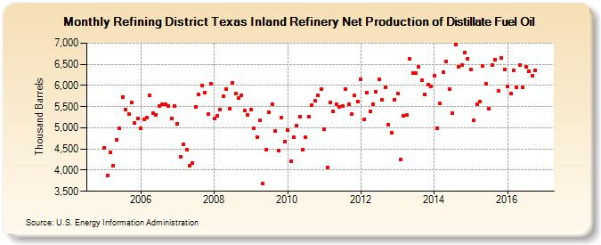

|
Download Data (XLS File) |
|
||||||||
|  | ||||||||
| Refining District Texas Inland Refinery Net Production of Distillate Fuel Oil (Thousand Barrels) | ||||||||
| Year | Jan | Feb | Mar | Apr | May | Jun | Jul | Aug | Sep | Oct | Nov | Dec |
|---|---|---|---|---|---|---|---|---|---|---|---|---|
| 2005 | 4,526 | 3,877 | 4,430 | 4,109 | 4,719 | 4,981 | 5,724 | 5,434 | 5,330 | 5,601 | 5,110 | 5,212 |
| 2006 | 4,989 | 5,207 | 5,243 | 5,766 | 5,338 | 5,309 | 5,512 | 5,549 | 5,565 | 5,521 | 5,229 | 5,524 |
| 2007 | 5,099 | 4,321 | 4,602 | 4,488 | 4,098 | 4,175 | 5,497 | 5,792 | 5,999 | 5,838 | 5,321 | 6,050 |
| 2008 | 5,223 | 5,274 | 5,432 | 5,752 | 5,906 | 5,444 | 6,068 | 5,804 | 5,698 | 5,757 | 5,403 | 5,310 |
| 2009 | 5,439 | 4,985 | 4,785 | 5,169 | 3,690 | 4,483 | 5,366 | 5,565 | 4,918 | 4,467 | 5,251 | 4,682 |
| 2010 | 4,955 | 4,202 | 4,773 | 5,057 | 5,257 | 4,487 | 4,773 | 5,264 | 5,525 | 5,642 | 5,765 | 5,910 |
| 2011 | 4,975 | 4,053 | 5,608 | 5,392 | 5,565 | 5,503 | 5,517 | 5,914 | 5,551 | 5,332 | 5,766 | 5,620 |
| 2012 | 6,138 | 5,200 | 5,834 | 5,386 | 5,563 | 5,848 | 6,147 | 5,653 | 5,956 | 5,077 | 4,883 | 5,670 |
| 2013 | 5,810 | 4,247 | 5,273 | 5,314 | 6,629 | 6,290 | 6,284 | 6,440 | 6,116 | 5,798 | 6,019 | 5,981 |
| 2014 | 6,235 | 4,995 | 5,570 | 6,304 | 6,563 | 5,920 | 5,349 | 6,961 | 6,434 | 6,485 | 6,785 | 6,635 |
| 2015 | 6,370 | 5,178 | 5,565 | 5,626 | 6,461 | 6,034 | 5,445 | 6,492 | 6,607 | 5,864 | 6,642 | 6,378 |
| 2016 | 5,968 | 5,807 | 6,366 | 5,954 | 6,478 | 5,952 | 6,443 | 6,329 | 6,234 | 6,360 | 6,105 | |
| - = No Data Reported; -- = Not Applicable; NA = Not Available; W = Withheld to avoid disclosure of individual company data. |
| Release Date: 1/31/2017 |
| Next Release Date: 2/28/2017 |